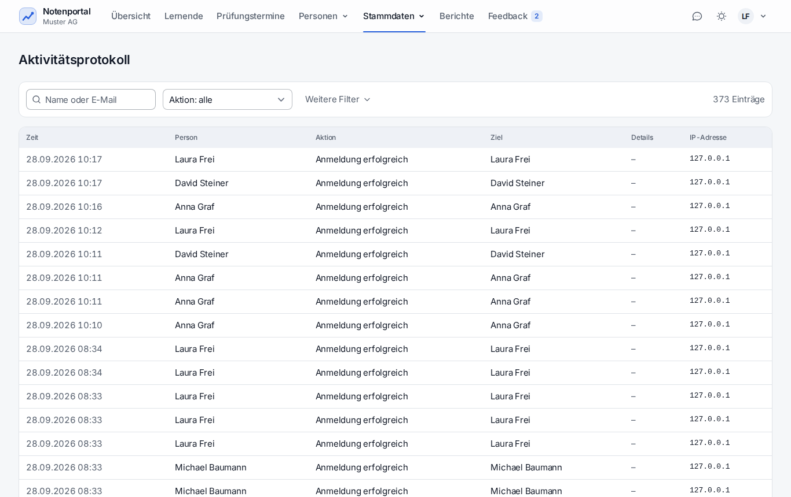

Was regelmässig läuft, was von Hand gehört und was bei Störungen zuerst zu prüfen ist.
cd /var/www/notenportal
sudo mysqldump --single-transaction notenportal > ~/db-backups/notenportal-$(date +%Y%m%d-%H%M)-vor-update.sql
git pull --ff-only
npm ci && npm run build
php artisan notenportal:migrate
sudo -u www-data php artisan optimize
php artisan notenportal:bereitschaftAlternativ erledigt sudo ./install.sh im selben Verzeichnis dasselbe und zieht zusätzlich
Systempakete nach. .env, Webserver-Konfiguration und Konten bleiben unverändert.
public/build und ist sofort live – ein halber Build heisst eine halbe Seite.| Befehl | Wirkung |
|---|---|
sudo -u www-data php artisan optimize | Config-, Routen- und View-Cache aufbauen. Nach jedem Update. |
sudo -u www-data php artisan optimize:clear | Alles leeren. Nach Änderungen an .env oder wenn eine Einstellung nicht greift. |
sudo -u www-data. Als ubuntu kompilierte Views gehören dem falschen Benutzer – Apache scheitert danach mit «touch(): Utime failed» und liefert HTTP 500.Apache liest als www-data über Gruppenrechte. Symptom bei kaputten Rechten:
HTTP 500 ohne Eintrag im Laravel-Log.
cd /var/www/notenportal
find . -path './.git' -prune -o -type d -user ubuntu -exec chmod u+rwx,g+rxs {} \;
find . -path './.git' -prune -o -type f -user ubuntu -exec chmod u+rw,g+r {} +
find . -path './.git' -prune -o -user ubuntu ! -group www-data -exec chgrp www-data {} +Ein Cron-Eintrag (/etc/cron.d/notenportal) ruft jede Minute den Laravel-Scheduler auf;
dieser startet die Aufgaben zu ihrer Zeit.
| Zeit | Aufgabe | Befehl |
|---|---|---|
| 02:30 | Sicherung, danach Kopie ausser Haus | notenportal:sicherung |
| 03:15 | Aktivitätsprotokoll aufräumen (älter als 365 Tage) | notenportal:aktivitaeten-aufraeumen |
| 06:30 | Benachrichtigungen prüfen (Prüfung bald, Note fehlt, Inaktivität …) | notifications:check |
| 18:00 | Tageszusammenfassungen versenden | notifications:digest |
| stündlich (:17) | Abonnierte Kalender abgleichen | calendar:sync |
| jede Minute | Mailwarteschlange abarbeiten | queue:work --stop-when-empty --max-time=50 --tries=3 |
Prüfen, ob der Scheduler läuft: php artisan schedule:list.
| Symptom | Zuerst prüfen |
|---|---|
| HTTP 500, nichts im Laravel-Log | Dateirechte (siehe oben), dann /var/log/apache2/error.log |
| HTTP 500 mit Log-Eintrag | tail -50 storage/logs/laravel-$(date +%Y-%m-%d).log |
| Einstellung greift nicht | sudo -u www-data php artisan optimize:clear |
| Keine Mails | Admin → Betrieb → E-Mail (Umleitung noch gesetzt?), dann Versandprotokoll, dann php artisan queue:failed |
| Kalender bringt nichts | Einstellungen → Kalender, Spalte Status und Fehler; Quelle antwortet evtl. 304 (unverändert – das ist in Ordnung) |
| Seite weiss oder alte Version | npm ci && npm run build nachziehen |
Tests brechen mit UnableToCreateDirectory ab | Ein Lauf als www-data hat storage/framework/testing/ zu eng angelegt: sudo chmod -R 2775 storage/framework/testing |
| Allgemeiner Rundumblick | php artisan notenportal:bereitschaft |
| Was | Wo |
|---|---|
| Anwendung | storage/logs/laravel-JJJJ-MM-TT.log (täglich, Level info) |
| Webserver | /var/log/apache2/error.log, access.log |
| Mailversand | Im Portal: Admin → Versandprotokoll |
| Sicherheitsrelevante Aktionen | Im Portal: Admin → Aktivitätsprotokoll (365 Tage) |

| Rhythmus | Aufgabe |
|---|---|
| täglich | Admin-Dashboard «Handlungsbedarf»: fehlgeschlagene Jobs, fehlgeschlagene Mails, Kalenderfehler, Sicherung |
| wöchentlich | Sicherung heruntergeladen und stichprobenweise geöffnet; Speicherplatz df -h |
| monatlich | sudo apt update && sudo apt upgrade, danach notenportal:bereitschaft |
| halbjährlich | Restore-Test nach Anleitung, Ergebnis ins Restorelog |
| vor dem 14.12.2028 | Serverzertifikat der Lab-CA erneuern (docs/betrieb.md, Abschnitt «HTTPS») |